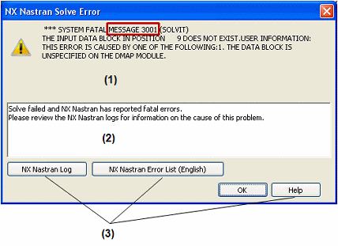

NX Nastran Solve Error dialog box
In the NX Nastran Solve Error dialog box:
-
The top portion displays the error message number and the corresponding error message generated directly by NX Nastran. (1)
You can use the error message number to search for more information in the NX Nastran Error List.
-
The middle portion suggests a corrective action. (2)
Example:-
In some cases, you can Edit the study processing parameters to add keywords or specify additional result types to extract.
-
For an assembly model, you can modify the assembly connector options in the Assembly Connector Properties dialog box.
-
-
The buttons help you find more information. (3)

- NX Nastran Log
-
Displays the NX Nastran Log Viewer in a docking pane.
In the NX Nastran Log Viewer, you can review the contents of different processing output files by selecting these option buttons: Log, f04, or f06.
Note:-
The .f06 file is the error file.
-
The .f04 file contains information about the files accessed, disk space, modules used, and more. This file is useful for debugging.
-
The .log file contains system environment information for executing NX Nastran and for file linking.
-
- NX Nastran Error List (English)
-
Opens the HTML format NX Nastran Error List in your default Internet browser. This document is available only in English.
Errors are grouped according to error number. You can use the links at the top of the page to jump to the appropriate section of the document. You also can search for the specific error number displayed in the top portion of the NX Nastran Solve Error dialog box.